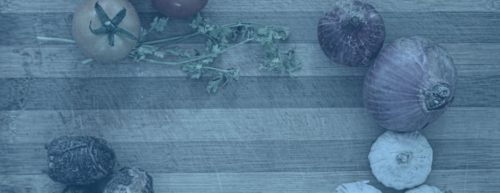
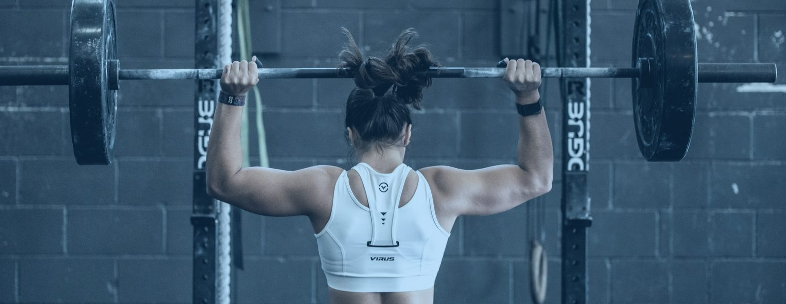

Public · blue duotone 60%
Web, social, webinar sales. Hands, food, iron, archive.


Clinical · natural colour
Talks to clinicians and carers. Documentary. Scrim raised to .62. Rights unverified.


Web, social, webinar sales. Hands, food, iron, archive.
Talks to clinicians and carers. Documentary. Scrim raised to .62. Rights unverified.